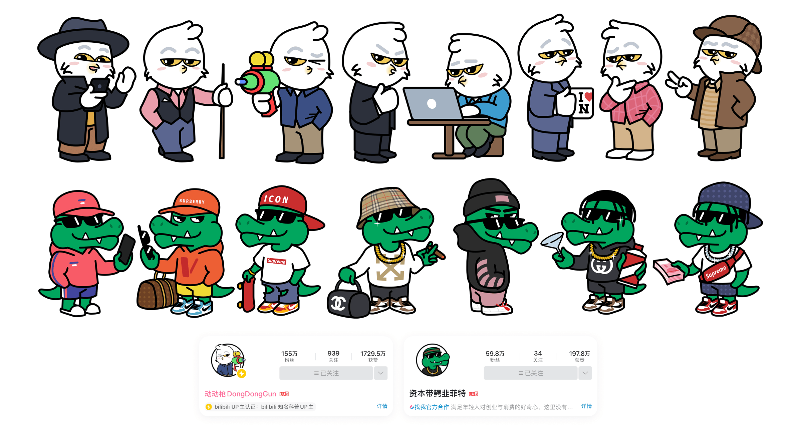
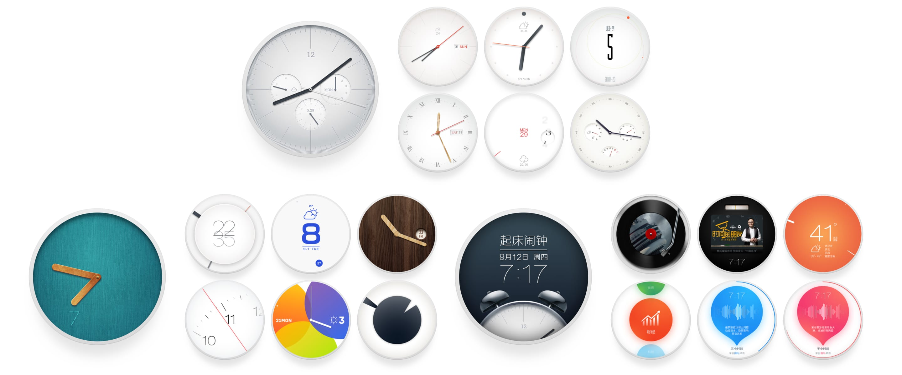
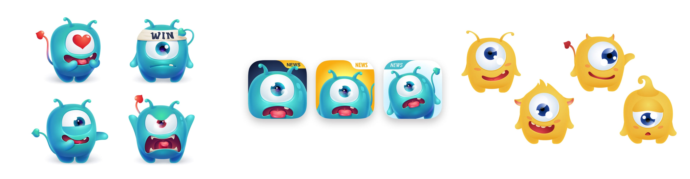
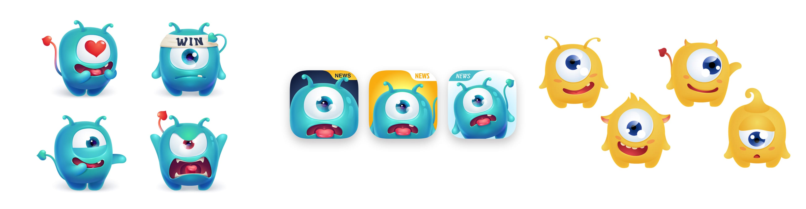
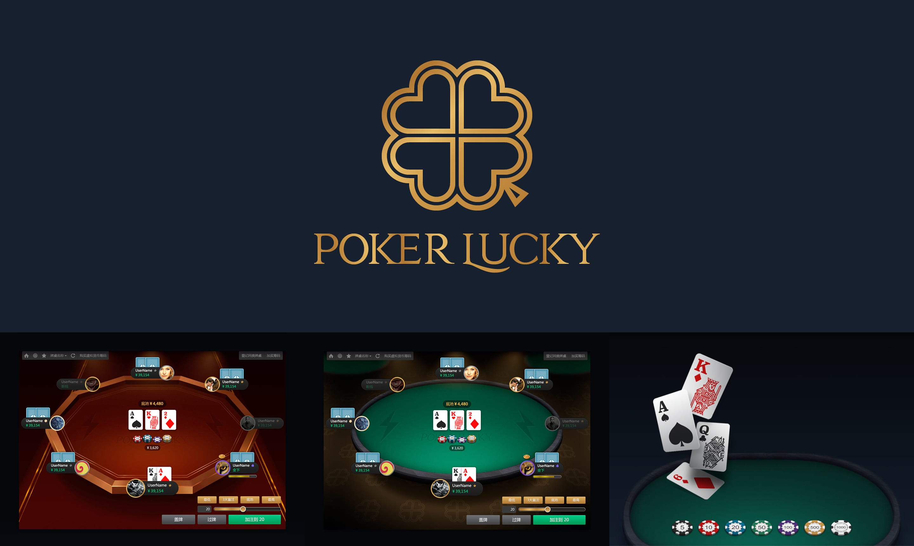

Loading...
Loading...
Bilibili Video Creator Mascot Design
I collaborated with my friend DongDongGun's team to create charming mascot illustrations for their educational video channel on Bilibili. The two main characters — a snowy owl and a crocodile — became the visual icons of their brand. These friendly, approachable designs helped the team present complex social phenomena and economic concepts in an entertaining and easily digestible way. Their videos often tapped into trending social discussions, and the mascots played a pivotal role in attracting and retaining a large fan base. To date, their channel has produced over 1,000 videos and amassed more than 2 million followers on Bilibili.
Smart Clock UI Design
During the early days of the smart wearable revolution, many innovative teams in China explored the possibilities of intelligent devices. I partnered with a pioneering team to design a UI for a home-use smart clock. The concept featured a round screen placed in personal living spaces, controlled via gesture-sensing technology — a highly futuristic idea at that time. I designed dozens of personalized watch faces and integrated functionalities such as music playback, podcast streaming, countdown timers, and weather updates. These features were all tailored to enhance everyday home experiences, merging practicality with aesthetic appeal.
Mobile Game Review Platform
 

With the explosive growth of mobile internet and rapid advancements in smart device performance during the 2010s, the mobile gaming market expanded at an unprecedented pace. This led to the emergence of dedicated game review platforms. For one such platform, I designed a playful little monster character to serve as the brand mascot, which was also used as the app icon. This fun and friendly mascot helped differentiate the platform and made it more memorable to users in a highly competitive market.
Online Poker Gaming Platform
Many online poker platforms often rely on flashy and sometimes misleading visual elements that emphasize gambling-related aesthetics. In my collaboration with PokerLucky, we took a different approach. We focused on preserving the elegance and sophistication inherent to the game of Texas Hold'em, deliberately avoiding visuals that suggested gambling or encouraged risky behavior. The goal was to create a pure skill-based competition and social platform, emphasizing strategy and community rather than chance and luck.